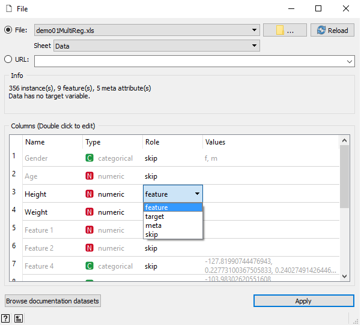
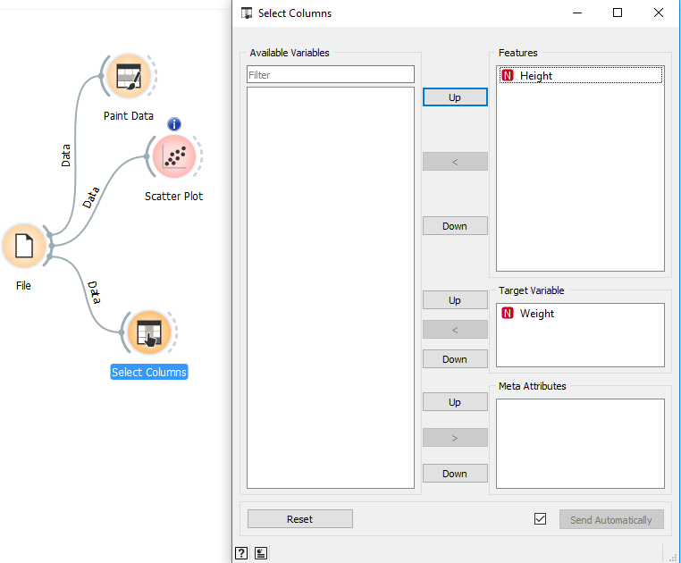
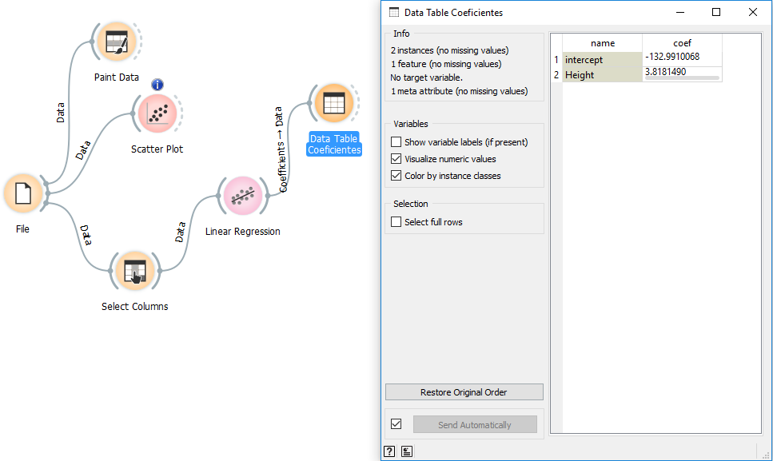

Al momento de abrir la herramienta, nos encontramos con la siguiente pantalla.
De las opciones disponibles seleccionaremos, “New” para crear un nuevo proyecto.
Asignamos un nombre a nuestro trabajo.
Opciones disponibles
Dentro de la paleta ubicada en la parte derecha, encontraremos una serie de opciones.
Ingresar datos por archivo
Para nuestro caso vamos a trabajar con datos q se encuentran dentro de una planilla excel, por lo tanto,
necesitaremos descargar los datos desde el siguiente link.
Para cargar el archivo utilizaremos la opcion "File" que se encuetra dentro de la categoría Data de Orange
Dentro del elemento "File" seleccionaremos nuestro archivo excel con los datos. En este caso se llama
demo01MultiReg.xls.
Importante: en la tabla que aparece debemos cambiar la opcion que aparece a skip en caso de que el dato de
esa columna no nos interese. De lo contrario, debemos cambiar la opción a feature. Para nuestro ejemplo solo seleccionamos
los datos Height y Weight, y el resto de las columnas del archivo las ignoramos.

Dibujar los datos
Al momento de cargar los datos, los podemos graficar con la herramienta Paint Data que se encuentra en la categoría Data.
Hasta el momento tendremos algo como esto:
Dibujar la regresión lineal con los datos
Otra forma de graficar es con la herramienta Scatter Plot que se encuentra en la categoría Visualize. Esta herramienta, aparte de dibujar los datos, nos permite dibujar una función lineal en la grafica de puntos dispersos, esta función representa la regresión lineal. Importante tener seleccionada la opción Show regression line para que efectivamente se muestre la regresión lineal
Crear la función de regresión lineal
Para crear la función de regresión lineal primero tenemos que definir un target dentro de las columnas de datos seleccionados, este target es la variable dependiente la cual nos interesa predecir.
Selccionar el target se puede hacer en el momento que se crea el archivo, o con la herramienta Select Columns. En este caso utilizaremos la segunda opción y marcaremos el campo Weight como target y Height com feature.

Lo siguiente es utilizar la herramienta Linear Regression que se encuentra en la categoría Model. Esto nos creará un modelo de predicción lineal.
Para conocer los coeficientes de la función lineal, utilizamos la herramienta Data Table de la categoría Data.
La función quedaría de la siguiente forma: Weight = 3.8181490*Height - 132.9910068.

Testear el modelo de regresión lineal
Para testear el la función utilizaremos la herramienta Predictions de la categoría Evaluate. Esta herramienta necesita del modelo que se obtuvo de la creación de la regresión lineal, y un set de datos para probar.
En la columna Linear Regression se encuentra el valor que nos entrega la función que creamos a partir de los datos y corresponde al Weight. En las otras 2 columnas se encuentran los datos reales de nuestro archivo.